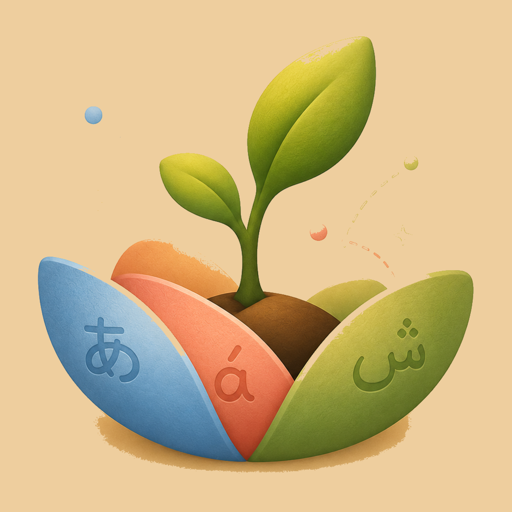

A growing box for your new language
A few new cards a day, spaced so they stay. Start by counting to ten — the novels can wait.

- Spross, der
- — a sprout; a young shoot.
- Sprosse, die
- — a rung of a ladder.
One letter between growing and climbing. We mean both.
Spross doesn't replace your tandem partner or your course — it keeps your vocabulary growing between conversations.
-
Sown, not crammed
A few new cards a day, in any pair of German, English, Spanish, Swahili, and Ukrainian. FSRS-6 spacing brings each word back just before it would slip.
-
Phrases unlock from words
A phrase stays closed until its component words are steady. When it opens, it lands on ground that can hold it.
-
A forest, not a chart
Each topic is a tree, each word a leaf. Leaves turn to blossom, then fruit, as the word ripens in your memory.
-
No guilt in the garden
No account, no ads, no guilt trips. Celebration only for a real personal record — and honest words when a tired head keeps nothing.
How far can you count?
In Spanish — or Swahili, or Ukrainian? Try it right here: a real drill from the app. Endless numbers, typos forgiven — a near-miss earns amber, never red.
Pick a language to count in:
Ten numbers in — it grows on you, doesn't it? The app takes it from counting to your whole vocabulary.
Become a SprösslingReady to become a Sprössling?
Leave your address and we'll write when something has actually grown — releases, new languages, notes from the garden. Letters at a garden's pace.